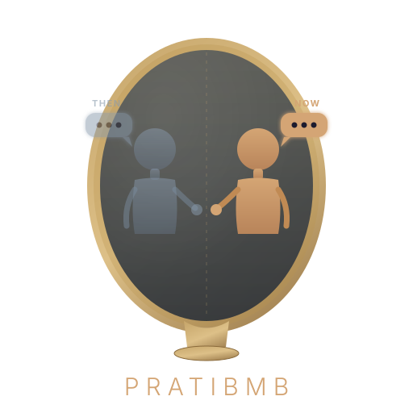

Chat with your 10-years-younger self.
Import your WhatsApp, Facebook, Instagram, Gmail, iMessage, Telegram, Twitter, or Discord history. A local AI learns your voice and lets you text past-you. No cloud. No API. Everything runs on your machine.
Your old messages — thousands of conversations across WhatsApp, Facebook, Instagram, Gmail, iMessage, Telegram, Twitter, and Discord — contain a version of you that no longer exists. The way you talked, the things you cared about, the jokes you made, the people you loved. Pratibmb brings that person back.
"I found messages from 2014 where I was excited about a job I'd completely forgotten about"
"My 2016 self texted completely differently. More emojis, more slang, more exclamation marks"
"Chatting with past-me about my old friendships was unexpectedly moving"
Export your chat history from any platform. Drop the files into Pratibmb. Messages are parsed and stored in a local SQLite database on your machine.
A local embedding model (84MB) creates semantic representations of your messages. This happens on your CPU/GPU. No text leaves your device.
A local LLM (2.3GB) analyzes your conversations to extract relationships, life events, interests, and communication style. All on-device.
Pick a year and start texting. Past-you responds in your voice, grounded in your real memories. Optional LoRA fine-tuning makes it even more authentic.
Export your history from any of these. Pratibmb auto-detects the format.
Export Chat as .txt
Download Your Information (JSON)
Download Your Information (JSON)
Google Takeout (MBOX)
macOS chat.db (SQLite)
Desktop Export (JSON)
Download Archive (.js)
DiscordChatExporter (JSON)
Free. Open source. Runs offline after first model download (~2.5GB one-time).
One-command install:
# macOS / Linux
curl -fsSL https://pratibmb.com/install.sh | bash# Windows (PowerShell)
irm https://pratibmb.com/install.ps1 | iexInstalls the desktop app + Python package + all dependencies.
M1/M2/M3/M4 and Intel Macs. Fine-tuning via MLX included out of the box on Apple Silicon.
brew tap tapaskar/pratibmb
brew install --cask pratibmb
xattr -cr /Applications/Pratibmb.app
Ubuntu/Debian (.deb) or universal (.AppImage). CUDA GPU or CPU.
yay -S pratibmb-bin
Windows 10/11 (64-bit). NVIDIA CUDA acceleration for fine-tuning.
winget install tapaskar.Pratibmb
Requires Python 3.10+ and ~4GB RAM. AI models (~2.5GB) are downloaded on first launch. Setup guide
Optional LoRA training teaches the model your texting style — abbreviations, language mix, emoji patterns. The base model works well without it; fine-tuning makes it sound more like you.
| Platform | Training Backend | GPU Required? | Time (~1500 pairs) | Install |
|---|---|---|---|---|
| macOS (Apple Silicon) | MLX-LM | No (uses Metal) | ~20 min | Included |
| macOS (Intel) | — | — | — | Not available |
| Windows / Linux (NVIDIA) | PyTorch + PEFT + QLoRA | Yes (6GB+ VRAM) | ~30 min | pip install "pratibmb[finetune-pytorch]" |
| Linux (CPU-only) | PyTorch (no quantization) | No | ~2 hours | pip install "pratibmb[finetune-pytorch]" |
On macOS Apple Silicon, MLX fine-tuning is included in the standard install (~450 MB total). On Windows and Linux, the PyTorch fine-tuning add-on is a separate install (+3–5 GB) to keep the base package lightweight (~150 MB).
Not just a policy. The code enforces it.
Every computation runs on your hardware. Messages, embeddings, models, and profiles never leave your machine.
No OpenAI API, no cloud inference, no remote servers. Works with Wi-Fi off after the initial model download.
Zero analytics, no crash reports, no usage tracking, no phone-home. Check the source code yourself.
Dual-licensed: AGPLv3 for open use, commercial license available for proprietary products. Every line is auditable. Don't trust us — verify.
Free for personal use. Commercial use is prohibited without a license.
Pratibmb is released under the AGPLv3 — free for individuals, researchers, and open-source projects. Commercial use, including embedding in proprietary products, offering as a hosted service, or distributing in closed-source software, requires a separate commercial license. Contact tapas.eric@gmail.com for terms.
Your most intimate data — a decade of private messages — is the one dataset you should never upload to somebody else's API. That's why Pratibmb exists.
No. Pratibmb is a conversation tool, not a mental health product. If you use it to process grief or difficult emotions, please set time limits and speak to a professional. Built-in session limits and gentle reframes are part of the v1.0 roadmap.
No. Everything runs on your hardware. There are no servers, no accounts, no cloud storage, no analytics. Your messages, embeddings, models, and profiles stay on your machine. Uninstall the app and the data is gone.
Yes. After the one-time model download (~2.5GB on first launch), Pratibmb works with no internet connection. It uses a local LLM (Gemma-3-4B) and a local embedding model (Nomic Embed). No API calls, no cloud inference.
The base model captures your general communication style, topics, and relationships well. Optional LoRA fine-tuning (20 min on Apple Silicon) teaches it your specific texting patterns — abbreviations, language mix, emoji habits. It's not perfect, but it's often surprisingly close.
Any modern computer with 4GB+ RAM. Apple Silicon Macs get the best experience (Metal GPU acceleration for fine-tuning). NVIDIA GPUs accelerate fine-tuning on Windows/Linux. CPU-only works too, just slower for the fine-tuning step.
Because your private messages are the most intimate data you own. Uploading a decade of conversations to any cloud API — OpenAI, Google, anyone — means that data now lives on someone else's servers, subject to their terms of service, their data breaches, and their training pipelines. Pratibmb exists so you never have to make that trade-off.
This happens because the app isn't signed with an Apple Developer certificate (code signing costs $99/year). It's safe — you can verify the source code yourself. To fix it, open Terminal and run: xattr -cr /Applications/Pratibmb.app — then open the app normally.
Not without a license. Pratibmb is AGPLv3, which means personal use, research, and open-source projects are free. But if you want to use it in a commercial product, offer it as a hosted service, or embed it in closed-source software, you need a commercial license. Contact tapas.eric@gmail.com to discuss terms.
Technically yes — you can import their exported messages and chat with the model. This is emotionally powerful and should be approached with care. We recommend setting session time limits and being mindful that it's a model, not the person. Dedicated "legacy mode" with additional safeguards is planned for v1.0.